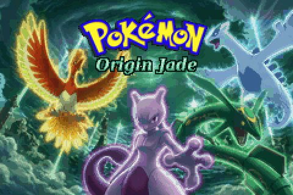

Stage 1
Kanto

Where it starts. Eight badges, the Pokémon League and the first title – then the road leads west.

Player's guide · Version 0.9.1 (Beta)
Three regions, one journey: Kanto first, then Johto, then Hoenn. Everything you want to look up on the way is here – read straight from the game's data.
Every region has its own badges, its own League and its own title. The credits only roll at the end of the whole journey.